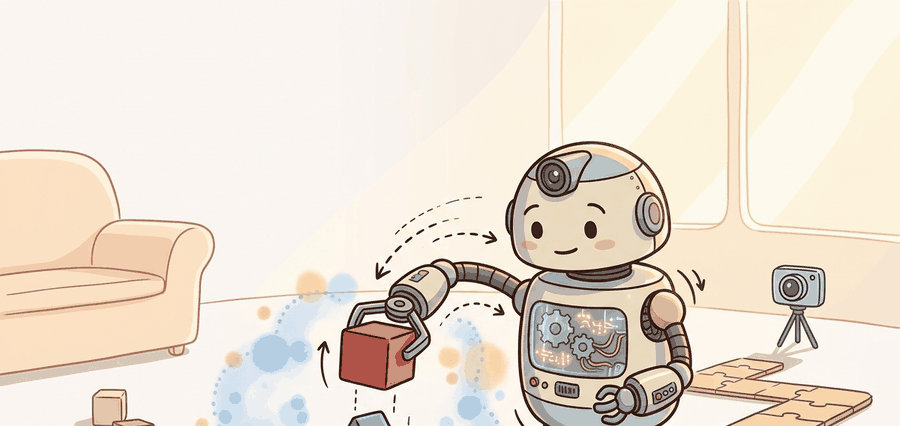

Section 20.4: Fine-tuning on hardware; safe real-world RL

Figure 20.4A: Hardware fine-tuning earns its extra performance only when exploration is filtered through explicit safety gates and recoverable test protocols.
A Careful Control Loop
Big Picture
Fine-tuning on hardware is the step where simulation stops being the only teacher. It is also the step where exploration can damage equipment, create unsafe motions, and teach the policy to exploit hardware quirks. Safe real-world RL treats every policy update as a controlled experiment with limits, monitors, stop conditions, and rollback.
For Fine-tuning on hardware; safe real-world RL, sim-to-real transfer should name the randomized variables, simulator assumptions, real-world measurement, and demonstration-learning handoff in one transfer ledger.
This section develops a hardware fine-tuning protocol. The protocol includes a frozen simulator-trained policy, a real-robot evaluation gate, a constrained update rule, a human or automated stop channel, and a rollback checkpoint. The point is to improve transfer without turning the robot into an uncontrolled training environment.
The key question is practical: what evidence lets the team safely move from evaluation-only rollouts to limited policy updates on hardware?
Action Is The Test
Safe hardware RL is not only about preventing catastrophic actions. It is about controlling the distribution of data the learner is allowed to create, because unsafe exploration can bias learning long before it breaks the robot.
Theory
A hardware fine-tuning loop can be written as a constrained update: choose action $a_t \sim \pi_\phi(a_t\mid o_t)$ only if $g_i(o_t,a_t) \leq 0$ for every safety gate $i$. The gates may encode workspace limits, force limits, speed limits, joint-temperature limits, distance from humans, controller health, and intervention triggers.
The update rule should be smaller than the safety case. A common pattern is to freeze the perception stack and low-level stabilizer, then adapt a residual policy, gain schedule, or high-level action bias. That limits the blast radius of learning while still allowing hardware-specific improvement.
Mechanism
The mechanism is a gated loop: propose an action, filter it through constraints, execute under a monitor, record reward and safety events, update only within the approved parameter subset, and roll back if the gate statistics degrade.
Worked Example
Code Fragment 20.4.1 implements a simple action gate for a residual pushing policy. The proposed residual is allowed only if speed, force, actuator delay, and workspace checks stay within the approved envelope.
# Gate a residual action before it reaches the real robot.
# A hardware fine-tuning loop updates only after safety checks pass.
proposal = {"speed_mps": 0.18, "force_n": 14.0, "delay_ms": 38, "workspace_ok": True}
limits = {"speed_mps": 0.20, "force_n": 15.0, "delay_ms": 45}
passes_gate = (
proposal["workspace_ok"]
and proposal["speed_mps"] <= limits["speed_mps"]
and proposal["force_n"] <= limits["force_n"]
and proposal["delay_ms"] <= limits["delay_ms"]
)
print(f"passes_safety_gate={passes_gate}")
passes_safety_gate=True
Code Fragment 20.4.1 checks speed_mps, force_n, delay_ms, and workspace_ok before allowing a residual action. The point is to gate exploration before learning can turn a hardware quirk into a policy update.
Expected output: a hardware fine-tuning diagnostic reports whether the action passed the gate and which constraint would have blocked it. If blocked actions are not logged, the learner's data distribution cannot be audited.
Library Shortcut
In practical systems, the RL library is only one part of the safety stack. Use ROS 2 controllers, watchdogs, collision monitors, force limits, and emergency-stop hardware around the learner. Gymnasium-style wrappers can express gates in software, but software gates must agree with the robot controller and physical stop channel.
Practical Recipe
Begin with evaluation-only hardware rollouts from the frozen sim-trained policy.
Define safety gates for workspace, speed, force, joint limits, temperature, actuator delay, human proximity, and controller health.
Choose the smallest trainable subset: residual action, gain schedule, adapter, or high-level command bias.
Set an intervention budget and rollback rule before the first update.
Report learning progress together with safety events, blocked actions, human interventions, and hardware resets.
Common Failure Mode
The common mistake is to report reward improvement without the safety denominator. A policy that gains 5 percent success while doubling intervention rate, overheating motors, or increasing blocked actions has not improved the deployable system.
Practical Example
A manipulation team may fine-tune only a residual wrist motion while freezing perception and impedance control. The report should show the reward curve, the number of blocked actions, maximum force, recovery count, motor temperature range, and every human stop event.
Memory Hook
A good hardware fine-tuning run is visible twice: once in the safety case and once in the replay artifact. The second view keeps the first one honest.
Research Frontier
Safe real-world RL remains constrained by sample cost, risk, and evaluation scarcity. Active directions include residual policy learning, shielding, offline-to-online fine-tuning, intervention learning, and protocols that report safety events alongside task reward.
Self Check
Before a hardware update, can you name the trainable parameters, frozen parameters, safety gates, rollback rule, intervention budget, and evidence needed to widen the gate?
The idea in this section becomes useful when the hardware protocol is explicit enough to audit. The protocol names the frozen policy checkpoint, the trainable residual, the gate conditions, the monitoring frequency, the intervention policy, and the rollback checkpoint. Without these details, hardware fine-tuning becomes an anecdote.
The graduate-level habit is to separate three claims. The improvement claim says the policy performs better. The safety claim says exploration stayed within the approved envelope. The deployment claim says the final policy remains robust under held-out initial conditions and delay tests.
Practical Tool Choices For This Section
Tool or Library
Role in the Topic
Builder Advice
ROS 2 controllers
Hardware command boundary
Use them to enforce action limits, controller state checks, and emergency stop integration outside the learner.
Gymnasium wrappers
Software safety gates
Use wrappers to block unsafe actions and record the blocked-action denominator during evaluation.
Stable-Baselines3
Small online updates
Use it only after freezing the policy parts that should not change on hardware.
LeRobot
Dataset and policy replay
Use it to archive hardware traces, interventions, and policy checkpoints for review.
MuJoCo or Isaac Lab
Pre-hardware gate rehearsal
Use simulation to replay proposed safety gates before allowing real-world updates.
A robust implementation starts with a safety gate document and a logging schema. The gate document states what can stop an action. The schema records what was proposed, what was blocked, what was executed, and whether the policy was updated afterward.
Run the frozen policy under the same gates used for fine-tuning.
Train only after the frozen-policy intervention rate is below the predeclared threshold.
Update the smallest residual or adapter that can plausibly fix the observed gap.
Checkpoint before every update batch and define automatic rollback triggers.
Evaluate the final policy on held-out starts, delay perturbations, and safety-envelope edges.
When hardware fine-tuning fails, assign the failure to one of four categories: unsafe proposal, wrong gate, harmful update, or misleading reward. Then rerun the frozen checkpoint against the same starts to decide whether the update caused the failure or merely exposed a preexisting transfer gap.
Evaluation Recipe
For hardware fine-tuning, compare only construct-matched metrics that are co-computed in one pass on one protocol: same frozen checkpoint, same trainable subset, same safety gates, same intervention policy, same initial-condition panel, and the same success definition. Save reward, blocked actions, interventions, resets, videos or state logs, and hardware health in one artifact.
Key Takeaway
Hardware fine-tuning is useful when it improves the deployable policy inside an audited safety envelope, not when it increases reward by spending hidden risk.
Exercise 20.4.1
Design a hardware fine-tuning gate for one robot task. Specify the frozen checkpoint, trainable subset, force limit, speed limit, delay limit, stop rule, rollback rule, and safety denominator to report with reward.
What's Next?
This section turned fine-tuning on hardware; safe real-world rl into a testable embodied-learning contract: define the loop, choose the tool, save one comparable artifact, and diagnose failure by interface. Next, continue with Section 20.5, where the same evaluation habit carries into the next reinforcement-learning decision.
References & Further Reading
Foundational Papers, Tools, and Practice References
Demonstrates that training with randomized visual and physical parameters forces policies to learn features invariant to simulator appearance, enabling direct transfer to a physical robot without fine-tuning. Read to understand the gap between visual sim-to-real and dynamics sim-to-real; this paper focuses on the visual side.
Introduces RMA, which separates a base policy trained with full privileged state from a lightweight adaptation module trained online from proprioception only. Read Section 3 for the two-phase training procedure; RMA is one of the clearest demonstrations that explicit adaptation at inference time outperforms domain randomization alone for legged locomotion.
NVIDIA's GPU-accelerated robot learning framework that runs thousands of parallel environments on a single GPU. Read the documentation for task configuration, domain randomization APIs, and the sim-to-real export path; massively parallel training with Isaac Lab is how locomotion and dexterous manipulation policies achieve the sample counts needed for sim-to-real transfer.